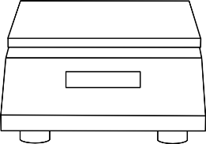
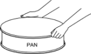
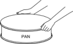
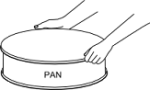

Fineness modulus of Cement
Objective
To determine the fineness of cement by dry sieving.
Apparatus used:
Mechanical shaker, trays, set of fine sieves, weighing balance etc..

STEP
1


Take cement in a pan and weigh 100 gram cement to the nearest 0.01g using the weighing balance.

00.00 g
100.00 g
STEP
2


Take 90µm sieve and pour cement sample to it.
STEP 3


Place the set of sieves in the mechanical shaker and allow to shake for 15 minutes.
Please HOVER on the SIEVE SET to shake it
STEP 4


 

Weigh the residue left on the 90µm sieve.
00.00 g

Observations:
Weight of cement sample(g) = 100gm
Weight of cement passing through 90µm sieve =
Weight of residue =
Percentage weight retained on sieve =
Trial =


© 2016 SOLVE - The Virtual Lab @ NITK Surathkal, Department of Applied Mechanics & Hydraulics